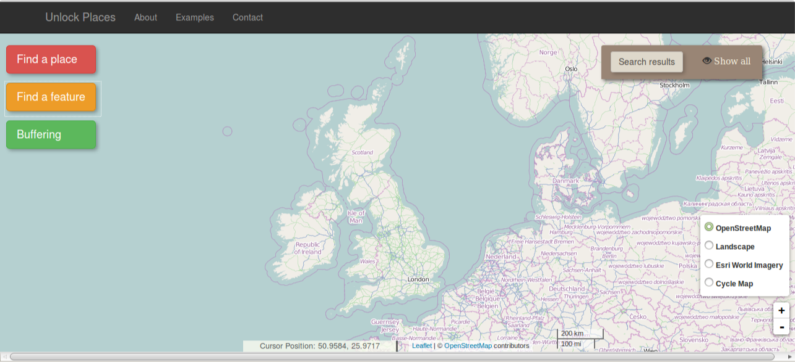

Example 5: Change the basemap layer.
There are four different basemap options available. The options can be seen by moving the cursor on the icon to the bottom right side of the page. The default selection is the OpenStreetMap tiles (fig. top-left), while there are the options of Landscape (fig. top-right), Esri world imagery (fig. bottom-left) and cycle map (fig. bottom-right)
